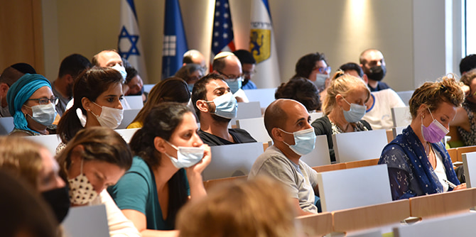
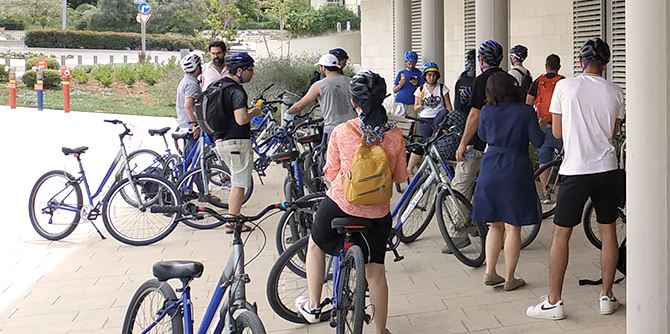
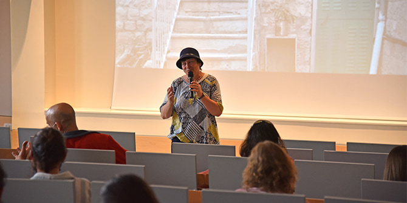

ימי הלימוד המשותפים במכון מנדל למנהיגות הם הזדמנות משמעותית להיכרות, למפגש ולשיח בין העמיתים בתוכניות המנהיגות השונות, ומטרתם גם לחשוף את העמיתים למרחבי ההשפעה שהמכון מבקש לפעול בהם. ימי לימוד כאלה יוצרים סביבה מקצועית חדשנית ומאתגרת לפיתוח מנהיגות, המזמנת היכרות עם רעיונות גדולים ומעודדת יצירת חיבורים מעשירים. בתוכניות המנהיגות המגוונות של המכון משתתפים עמיתים מקהילות וממגזרים שונים בחברה בישראל, ובהם מנהיגים מהקהילה החרדית, מובילים בחינוך הבלתי פורמלי, מובילים בתחום התרבות היהודית וקציני צה"ל.
מרחבי גבול עשויים לקבל ביטוי גאוגרפי, פוליטי או סמלי, והם תוצר של תהליכים ויחסים חברתיים הכוללים שותפות או מאבק בין קבוצות. הגבול מסמן את נקודת המפגש בין קבוצות ומהווה בעצם מהותו זירה רגישה שבה כל תזוזה זעירה עלולה לשבור סטטוס-קוו או להוביל למתח ולמאבק.
העיר ירושלים, על קווי התפר שבה – החברתיים, האידאולוגיים, ההיסטוריים, הפוליטיים והדמוגרפיים – היא מיקרוקוסמוס של החברה הישראלית, שבו נפגשים יחידים וקבוצות. מרחבי גבול אלו מזמנים מפגש בין סיפורים היסטוריים שונים, אמונות, ערכים וקבוצות אינטרס. בין שאלו כפויים ובין שנעשים מרצון, מפגשים אלו מעלים על פני השטח סוגיות אנושיות ואתיות שבהן נדרשים מעשי מנהיגות.
ביום הלימוד הנוכחי בחרנו להציב סוגיה רלוונטית לשאלת המנהיגות בחברה הישראלית ולבחון אותה במשותף. יצאנו "לשטח" – למקומות שונים בירושלים, כדי להביט בכמה מקרי בוחן הנמצאים על קווי תפר בעיר, שבהם בא לידי ביטוי מתח או קונפליקט, ודרכם ביקשנו לבחון שאלות של מנהיגות ודרכי פעולתה במרחבים ייחודיים אלו. העמיתים יצאו בקבוצות מעורבות לסיורים מונחים, ולאחריהם קיימו דיונים והתבוננו ב"שולחן העבודה" שלהם ובעקרונותיה של מנהיגות המודעת למורכבויות שבה היא פועלת.

סוגיות המפתח שנבחרו כמקרי בוחן ליום זה:
בין אורתודוקסיות: אחד המקומות הטעונים בעולם מבחינת החיכוך הבין-דתי וניסיונות האתגור של גבולותיו הוא הר הבית: המקום הקדוש ביותר ליהדות, השלישי בקדושתו לאסלאם והמשמעותי בהיסטוריה ובמורשת הנוצרית. סיור זה בחן את התהליך הדינמי של עיצוב ובדיקת הגבולות הפוליטיים, הדתיים והחברתיים בהר הבית ובסביבתו.
מוסררה בעין אמנותית: שכונת מוסררה היא שכונת תפר במובנים רבים: היא יושבת על הקו העירוני, צמחה בה תנועת המחאה של הפנתרים השחורים כנגד הפערים העדתיים והיא צמודה לשכונת מאה שערים. את הגבולות הפוליטיים והחברתיים ביקשנו לחוות בעין אמנותית, דרך צילום ומוזיקה.
קווי תפר ברחוב דוד המלך: ברחוב זה מצויים מגוון גבולות פיזיים וחברתיים, כדוגמת הפצע הכואב של פינוי ממילא מאוכלוסייתה המוחלשת, שחיה על קו שביתת הנשק ההיסטורי עם ירדן והפיכתה של השכונה לקניון יוקרה; שכונת מחנה ישראל, השכונה המרוקאית שהייתה אבן דרך בתהליך היציאה מהחומות וצמיחתה של ירושלים ואבן לצד הדרך של הזיכרון הקולקטיבי ותודעת השימור; היברו יונין קולג', המפגיש בין זרמים ביהדות ומדגים את קשיי הזרם המרכזי ביהדות ארצות הברית בקיום לצד האורתודוקסיה הישראלית, דבר המתבטא באדריכלות ובמיקום של המבנה; ויוזמה של מפגש בין עולמות אתניים ודתיים בימק"א.
טבע ועיר: בשנים האחרונות מתחזקים הקולות הקוראים להשבת הטבע אל תוך העיר ולמתן האפשרות לחצות את הגבול מאווירת המירוץ העירוני לאווירת הפסטורליה הטבעית. הנגשת הטבע הופכת את יעדי הטבע העירוני למוקדים המושכים אוכלוסיות מגוונות המגיעות ליהנות מהמרחב זו לצד זו. עבור בעלי החיים, מהווים אתרי הטבע העירוני נאות מדבר של מזון ואפשרות מחיה בתוך המרחב הבנוי והסלול של העיר.
לצד המסילה: סיור רכבת אל ירושלים המורכבת: בירושלים כולנו "על הרצף". בין קודש לחול, עתיק לחדש, רוחני לפוליטי, אישי ללאומי, דתי לחילוני, יהודי לערבי, מזרח למערב. את הרצפים הללו חוצה בקלילות הרכבת הקלה המחברת בין הקצה הדרום-מערבי של העיר לקצה הצפון-מזרחי שלה. מצד אחד, העיר "חוברה לה יחדיו" על ידי הרכבת. מצד שני, לאורך הנסיעה לעיתים מורגש שהחיבורים רופפים עד בלתי נראים. נקודות המגע הללו בין עולמות שונים בתוך ירושלים, השזורים לאורך המסילה, מאפשרות הצצה מרתקת אל המורכבות של העיר.

את יום הלימוד חתמה אשת ההלכה
מלכה פיוטרקובסקי, חברת סגל אורח במכון מנדל למנהיגות, אשר הציגה בתור דוגמה את המתחים ואת קווי התפר החברתיים הבאים לידי ביטוי בסיפורו של בית הכנסת הירושלמי המתואר בסרט "ישמח חתני". העמיתים קיבלו בסיס לדיון על המאחה והמאחד בין קבוצות מובחנות שלהן השקפות שונות.
עבור העמיתים, חשיבות רבה הייתה בעצם המפגש עם עמיתיהם בתוכניות השונות – דבר שהעניק הזדמנות לשוחח על סוגיות של מנהיגות באזורי קונפליקט מתוך זוויות ראייה שונות מאוד, ולבחון במשותף את הרחבת הפרספקטיבות "והארת נקודות העיוורון", כפי שהם ציינו. זאת ועוד, מתוך הדיונים הללו עלו חיבורים חדשים ואפשרויות ליצור שותפויות שיסייעו בהתמודדויות דומות באזורי פעילות שונים.
{kind=link}
{kind=link}
{kind=link}